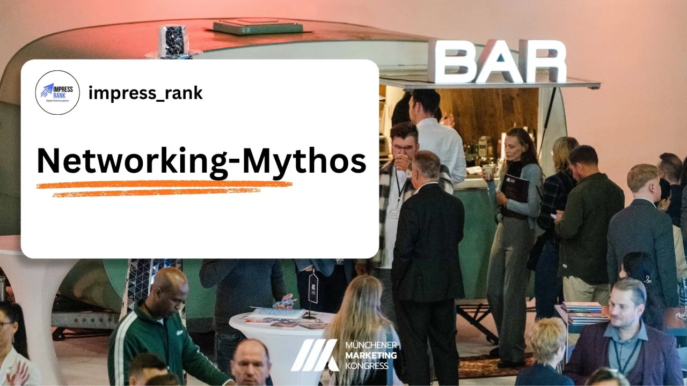

Hi,
Events and trade fairs are a great thing.
You dress up, pockets full of business cards, and mingle with the crowd.
After grabbing a quick coffee, you go from booth to booth. You listen in on conversations and try to join in.
But you quickly notice: the conversations all go the same way.
Everyone has their pitch programmed in and just reels it off.
And then the moment for the business card is gone, the LinkedIn connection missed. Someone new joins or the thread is lost.
Back home, you proudly tell everyone that two people wanted your business card.
Building a network is a great thing. But it usually takes years before you can make use of it.
A happy customer asks for a brochure because they know someone.
You are pleased.
But months later, still nothing new.
Why?
Because you are relying on other people to sell your product or service just as successfully as you can.
So referral marketing is not only a long-term process, it is also one where you give up control.
No levers you can pull to attract more prospects.
So what are the better kinds of marketing where you stay in control?
Meta and Google Ads.
Basically, you pay the platforms to show the right people exactly what you want, the way you want it.
Again and again.
Until they get in touch.
So if that sounds like something you would like to try, get in touch.
I'll take care of it.
Talk soon,
John
Free intro call
Want to know how to win more new customers? In a free intro call we look together at where you stand.
Book your free intro call